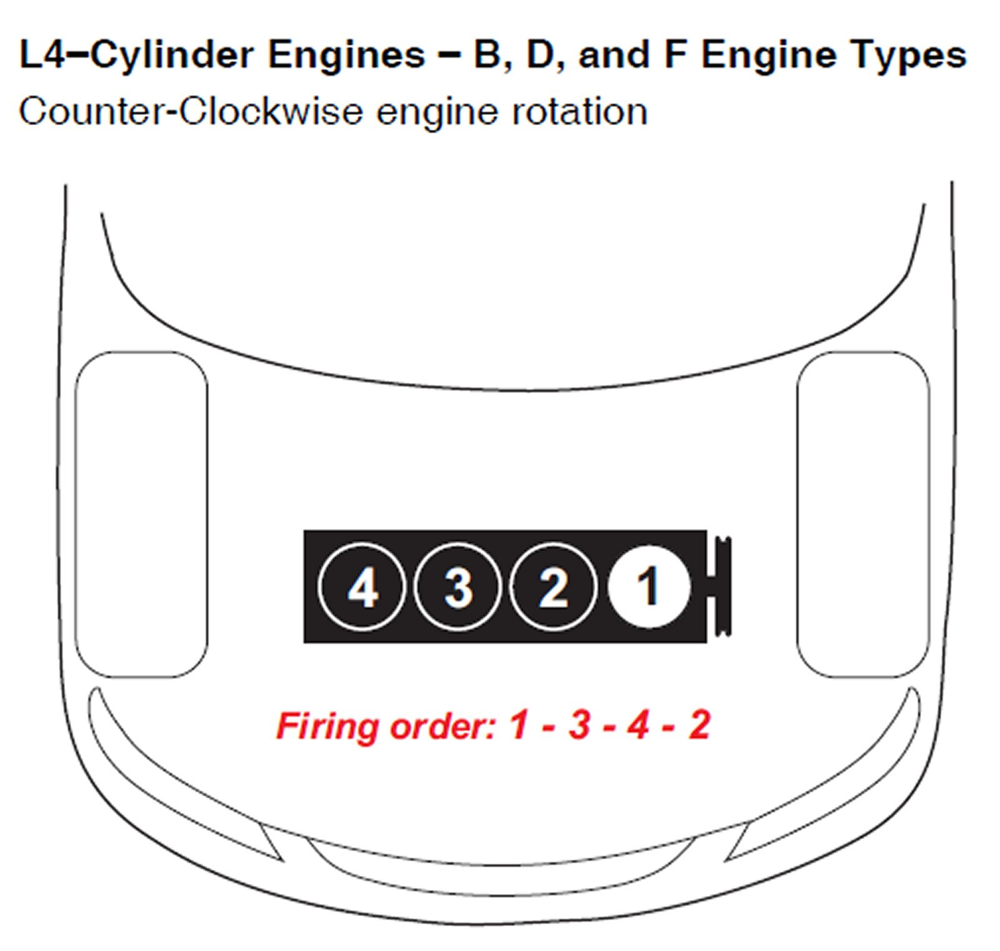
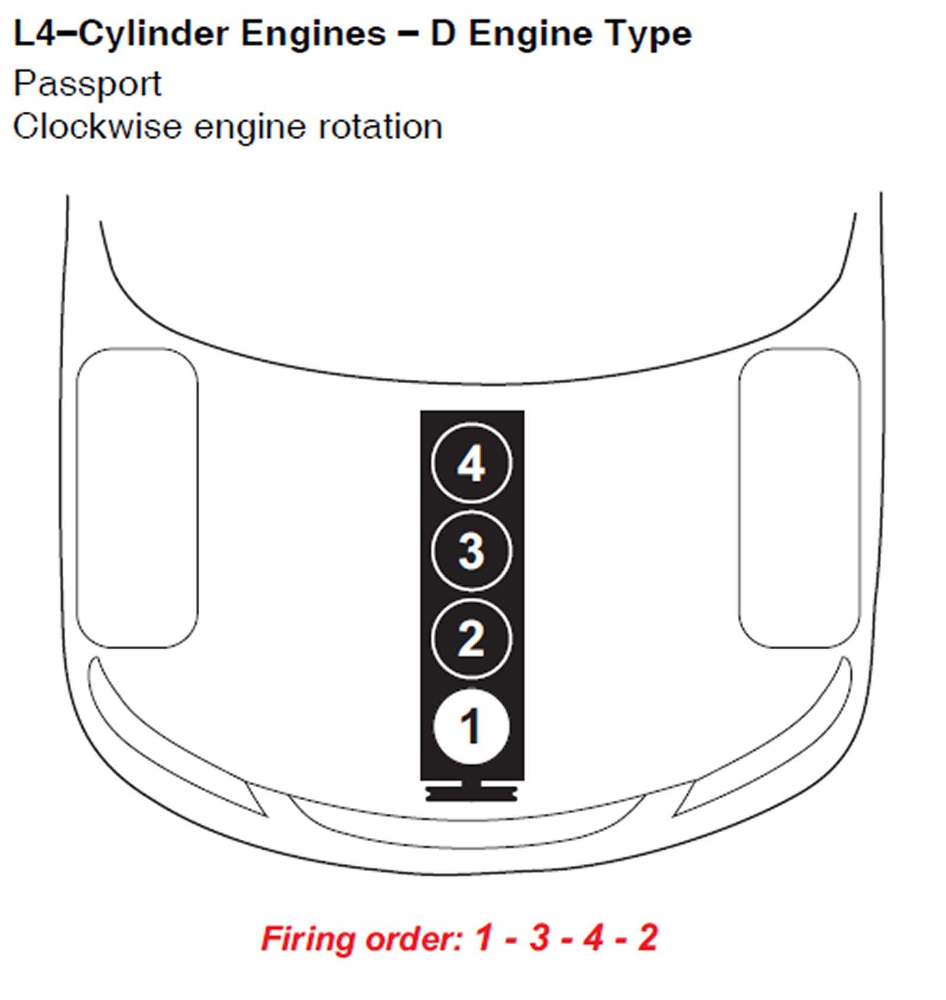
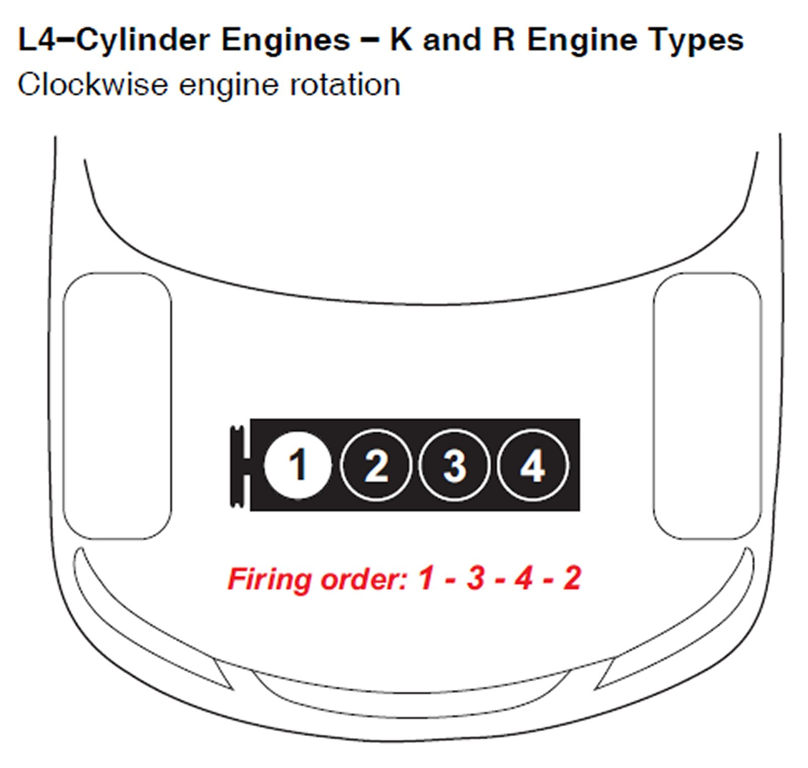
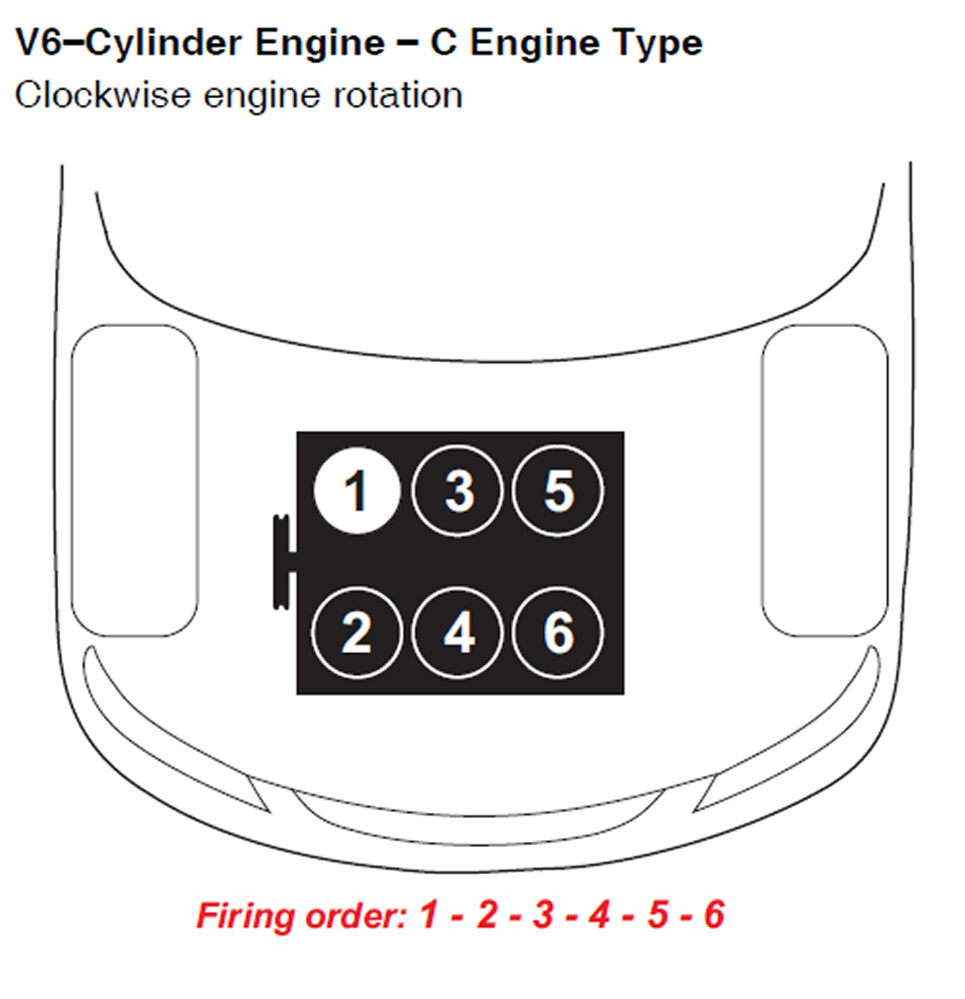
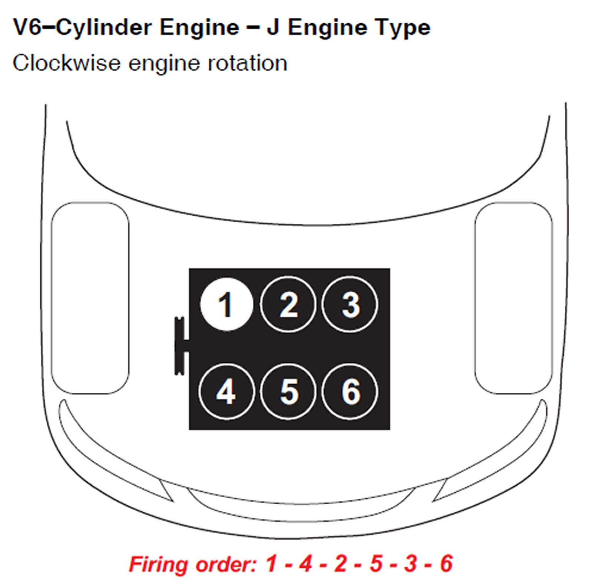
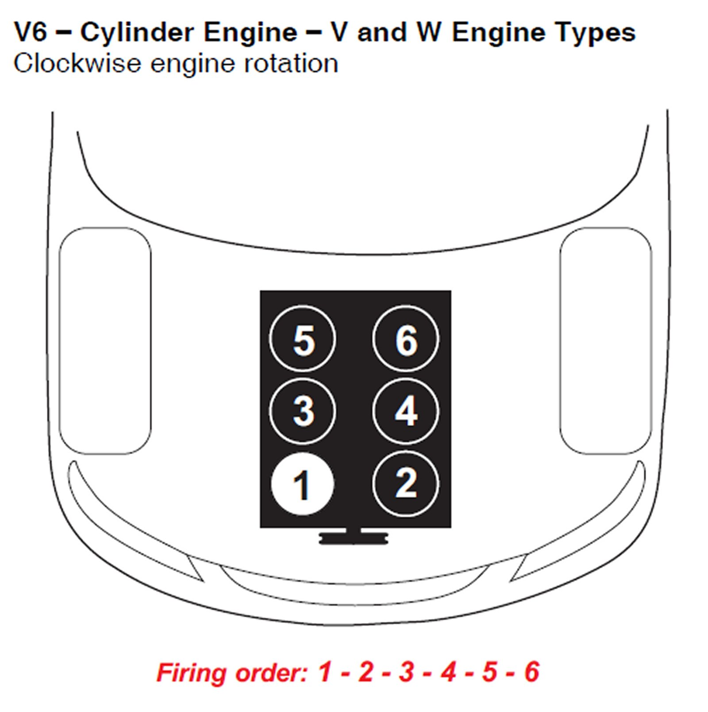
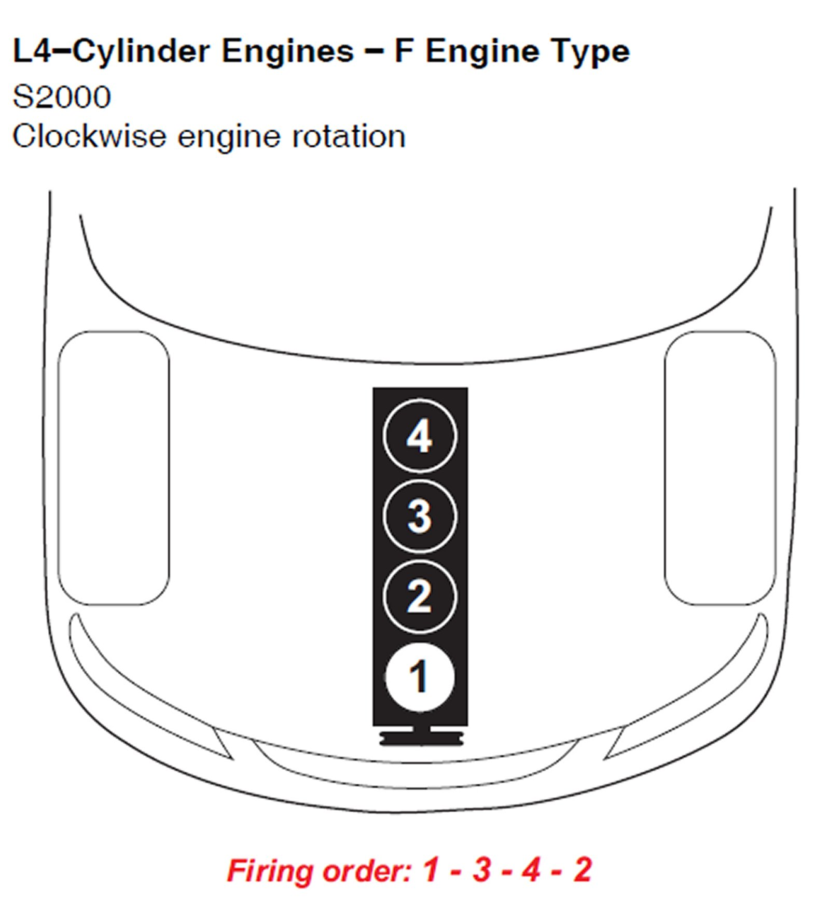
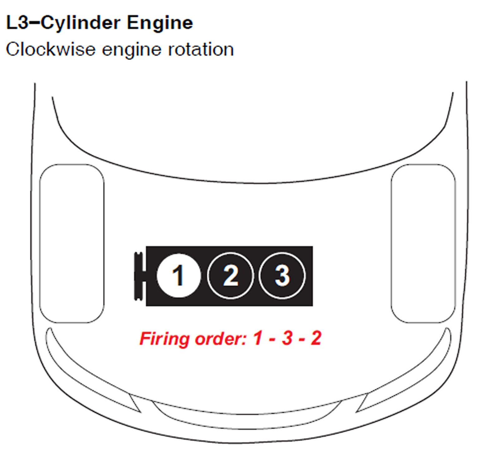

Number One Cylinder: Locations
*Hint - See Vehicle Emissions Label for Engine Type
B, D & F Engine Types:

Passport D Engine Type:

K & R Engine Types:

C Engine Type:

J Engine Type:

V & W Engine Types:

F Engine Type:

Insight 3 Cylinder:
